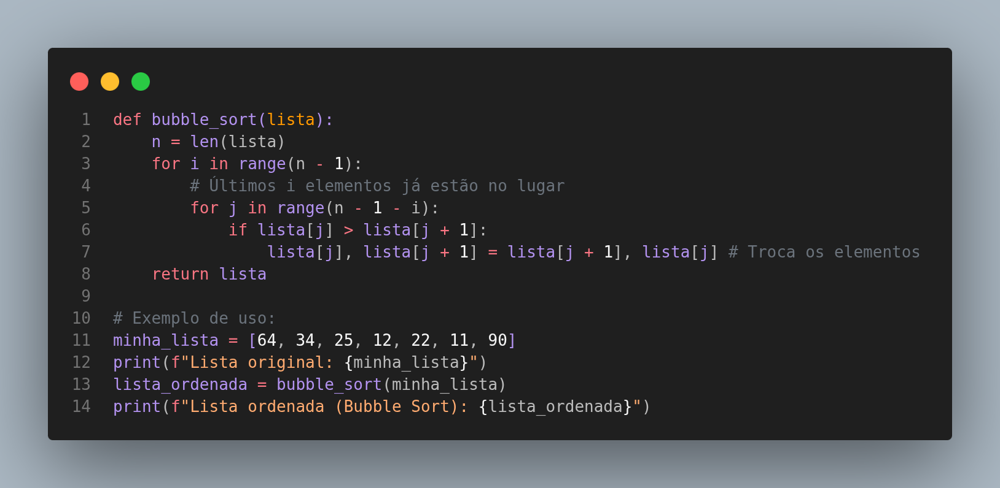

O Bubble Sort, ou Ordenação por Bolha, é um dos algoritmos de ordenação mais simples de entender. Ele funciona percorrendo repetidamente a lista, comparando elementos adjacentes e trocando-os de lugar se estiverem na ordem errada. Os elementos maiores "flutuam" gradualmente para o final da lista, como bolhas subindo na água.
Analogia: Imagine uma fila de pessoas de diferentes alturas. O Bubble Sort seria como pedir para cada pessoa comparar sua altura com a pessoa imediatamente à sua frente. Se a pessoa da frente for mais baixa, elas trocam de lugar. Esse processo se repete até que a pessoa mais alta chegue ao final da fila. Depois, o processo é repetido para o restante da fila, até que todos estejam em ordem de altura.
Complexidade: A complexidade do Bubble Sort é O(n²) no pior e no caso médio. Isso significa que, para uma lista
com n elementos, o número de operações cresce quadraticamente. Para listas grandes, o Bubble Sort se torna muito
ineficiente, sendo mais adequado para fins didáticos ou listas muito pequenas.
